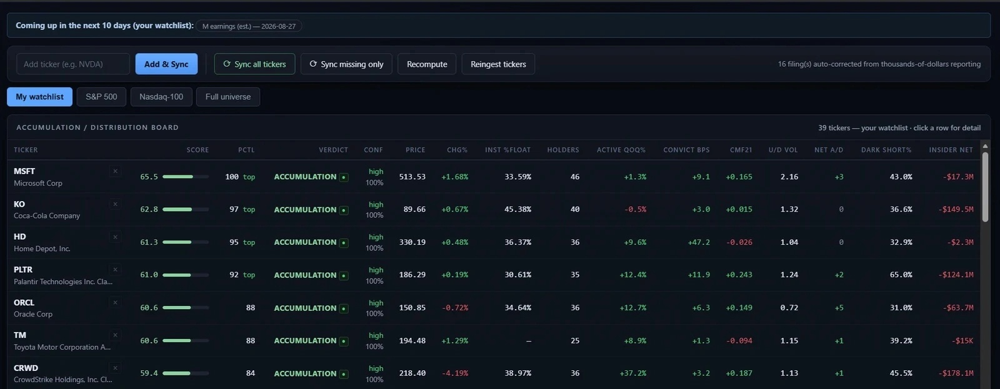
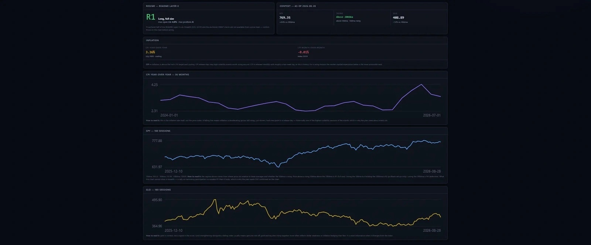
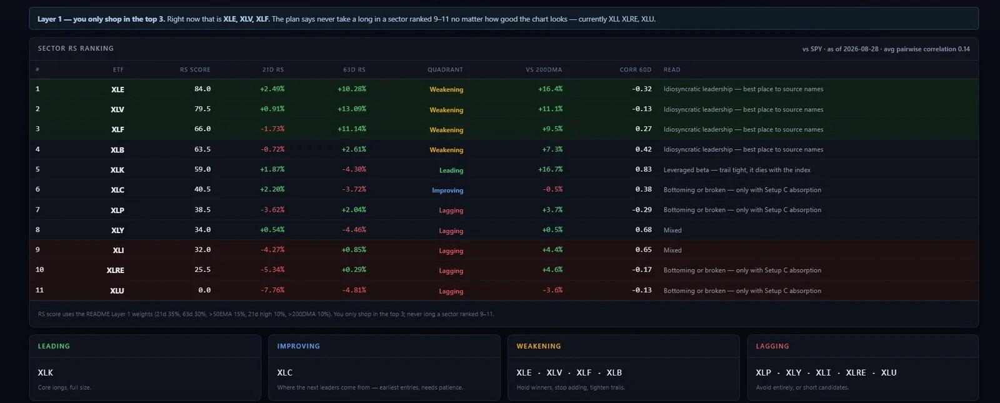

Find a candidate in the Screener
Open the Screener (L2) tab and pick a watchlist or filter — My watchlist below. Each candidate is scored against a fixed checklist grouped into four categories. A name that clears every automatable box shows QUALIFIES · 12/12; a manual-only box (optionable, earnings distance, pending M&A) is marked with a dot, never a check — the desk can't see it from a price feed, so it never silently counts it as a pass.
- ✓Price > $10$432.42
- ✓20d avg dollar volume > $25M$1,074M
- •Optionablenot in feed — check broker
- •Earnings > 7 sessions awayconfirm manually
- •No pending M&A / lockup / rebalanceconfirm manually
- ✓Outperforms SPX over 63d29.1% vs 2%
- ✓Outperforms its sector (XLV) over 21d12.1% vs 4.7%
- ✓Sector ranked in the top 3XLV is #2 of 11
- ✓Price > 200DMA$351.47
- ✓200DMA flat or rising+3.76% over 20 sessions
- ✓50DMA > 200DMA50DMA $385.94
- ✓ATR(14) below its own 50d average9.06 vs avg 10.01
- ✓Range tightening over last 10–20 sessionslast 10d 39.01 vs prior 45.56
- ✓Consolidation volume below the 20d average5d 2.1M vs 20d 2.6M
- ✓Accumulation days outnumber distribution4 vs 3, last 25d
- QUALIFIES vs CLOSE — a name missing one or two boxes still shows up under "Close," worth a second look, not a pass.
- Dots aren't failures — a manual-only box never disqualifies a name; it's a reminder to confirm by hand before entry.
- Clicking a candidate is how you carry a ticker into the next stage — everything from here on is Example specifically.
Read the argument on Ticker Detail
Identity, chart, and this week
The header never scores anything — it's the chart's own information: who the company is, where the close sits in the 52-week range, and whether volume has been backing the move.
The narrative — the first thing anyone reads
Every figure below it is stated in full, never aggregated from a truncated list — the composite weighs only hedge and active managers, so the all-filer dollar total and the scored figure are both spelled out.
Example is Example Company, in Biological Products, (No Diagnostic Substances) (Health Care sector, XLV), a mega cap name. Relative strength: leading its XLV sector, and leading the S&P 500.
31 tracked institutions filed for both 2026-03-31 and 2026-06-30, and between those filings they bought a net $8.73B more than they sold ($11.44B bought against $2.71B sold). Of those, 19 added to their stake, 11 trimmed it, 1 opened a brand-new position, and 0 exited entirely.
The ownership score weighs only the hedge funds and active managers in that set, since an index fund's position tracks its benchmark rather than an opinion about Example: 12 of them traded it, buying a net $5.96B. Their share count moved +23.14% quarter-over-quarter, and that is the figure the ownership block scores.
Day-to-day trading through 2026-08-28 leans toward accumulation — money has been flowing in over the past month, and the stock has outpaced the S&P 500 by 27.18 points over the last quarter.
Biggest single move: , an index/passive filer the score does not weigh, added $3.78B (27% of what it held before) — 43% the size of the whole group's net change. 1 brand-new position opened this quarter, $2.04B combined.
Insider selling: 6 open-market sales in the last 90 days against 0 purchases, net −$4.1M, 100% of them outside a pre-scheduled 10b5-1 plan.
Composite Signal and the four evidence blocks
The 0–100 score blends only what's shown below it — click any block on the real page to see the sub-metrics that built it. Weights are fixed: ownership 30%, live tape 35%, short side 20%, insider 15%.
State & Transition — how the read has changed
Two axes only: 25-session price drift and a 4-metric flow composite, crossed into nine named cells. Ownership, short pressure, relative strength and the nowcast are shown as context circles and deliberately never move the phase.
advance
advance
risk
decline
- A phase must clear ±0.5 to be entered and hold down to ±0.25 for 3 sessions before it's published — a single hot day can't flip the label.
- This run is 8 sessions old — the 38th percentile of Example's 16 prior confirmed-advance runs (median 11, longest 38).
- Nothing on this panel feeds the composite score — it re-reads evidence the score already used.
historical data Institutional Ownership → Largest Holders → Position Changes
Quarterly and up to 45 days stale by design — this is the legal disclosure, not the live tape. Deltas compare only managers who filed for both quarters; a manager who hasn't filed yet is excluded, never counted as a seller.
Largest holders
| Manager | Type | Shares | % Float | Δ QoQ |
|---|---|---|---|---|
| passive | 49.36M | 9.17% | +26.9% | |
| Example Company | passive | 30.56M | 5.68% | +0.0% |
| Institution C | active | 16.32M | 3.03% | +44.3% |
| Institution E | passive | 15.70M | 2.91% | +1.7% |
| Institution D | bank | 13.65M | 2.54% | −13.8% |
Biggest position changes
| Manager | Action | Traded $ | Δ Book Wt |
|---|---|---|---|
| ADD | $3.78B | +5.6bp | |
| Institution A | NEW | $2.04B | +20.3bp |
| Institution C | ADD | $1.81B | +14.4bp |
| Institution F | TRIM | −$1.33B | −7.8bp |
| Institution B | ADD | $910.5M | +15.7bp |
Nowcast — bridging the reporting gap
historical data says what institutions held 60 days ago. The Nowcast asks only whether the tape since then has moved with or against that direction — modelled inference, never treated as disclosure.
Tape agrees with the last-confirmed direction 100% of the gap window. Tape since the 2026-06-30 quarter-close is consistent with continued buying — plausible, but inferred from price/volume, not disclosed.
Daily order-flow · short side · insiders
Three tighter panels, each scored above but shown here with the actual reading. Off-exchange short volume in particular is a weak signal by design — most of it is market-maker hedging, not directional bets.
Daily order-flow
Off-exchange & short
Business fundamentals — context, not a timer
Over a 5–25 session swing hold, fundamentals rarely drive the move — the tape does. They matter mainly as risk: what can gap against you.
| Metric | Value | Read |
|---|---|---|
| Revenue growth (YoY) | $10.05B vs $8.15B | +23.4% |
| Revenue momentum (QoQ) | 16.7% then −9.8% prior | accelerating |
| Net income (latest qtr) | $2.38B | profitable |
| Gross margin | 70.7% | stable |
| Current ratio | $35B vs $25.5B | 1.37 · adequate |
| LT debt / equity | $51.9B vs $11.7B | 4.44 · heavily levered |
| Operating cash flow | $2.19B | self-funding |
| Free cash flow | opex $2.19B − capex $0.71B | $1.48B positive |
Decide what to do — Level Playbook
Pick an anchor start (last major pivot, base start, start of year, last earnings, since last FOMC, or a fixed 21/63/252-session lookback) and an anchor end — Live by default — then hit Analyse. Example's default 63-session read:
Price is not close enough to any mapped level for a level-based decision. This is the state the desk should be in most of the time. Set the alerts below and go do something else.
Pattern history — failed breakdown at Custom VAL
Where price sits in the auction
Profile shape — b-shaped (bottom-heavy)Volume concentrated low in the range with a thin tail above — price fell through the top on light volume, then heavy trade built near the lows. Reads as selling being absorbed, not the market advertising for still-lower prices.
Confluence stacked below (support)
- Impulse POC 412.54
- Fib 61.8% 388.24
- AVWAP #6 (custom) 373.38
- Impulse VAL 363.79
- HVN 339.42–367.90 353.39
- 6-month POC 345.69
- "No level in play" is the honest default — the state machine only speaks when price is close enough to a mapped level to matter.
- A TESTING level always instructs waiting; only a close — never a wick — decides approaching / testing / rejected / breaking / accepted / failed-break.
- The vertical scale on the real ladder is the profile's own span — never a longer window that would squash the read.
Check the record — Backtest
Choose a lookback and press Run backtest. For Example: 750 sessions walked, 2023-09-01 → 2026-08-28.
Per-setup performance
| Setup | Signals | Win rate | Avg R | Expectancy | Max DD |
|---|---|---|---|---|---|
| A — AVWAP Reclaim Pullback | 9 | 22% | +0.47 | +0.47R | 2.00R |
| B — Value Area Breakout | 45 | 42% | +0.12 | +0.12R | 2.08R |
| C — Failed Breakdown / Absorption | 1 | 100% | +0.27 | +0.27R | 0.00R |
| All setups combined | 55 | 40% | +0.18 | +0.18R | 2.56R |
| MA — 50/200 SMA crossover (baseline) | 3 | 33% | −0.35 | −0.35R | 1.64R |
Trade log — most recent
| Setup | Entry | Entry px | Exit | R | Exit reason |
|---|---|---|---|---|---|
| A | 2026-07-23 | 357.89 | 2026-08-28 | +5.49R | still open at end of history |
| B | 2026-07-20 | 365.81 | 2026-08-03 | +0.26R | time stop (no +1R in 10d) |
| B | 2026-07-07 | 372.11 | 2026-07-21 | −0.16R | time stop (no +1R in 10d) |
Prediction (experimental)
Out-of-sample accuracy 52.1% against a 53.1% base rate ("always up"), 95% interval 47.6%–56.5% over 482 multi-period sessions — the interval covers the base rate, so this model is not distinguishable from simply calling every session up. This is the expected result on most tickers and is not a bug.
- Read the win rate next to the expectancy — Setup A wins only 22% of the time but still nets +0.47R; a few large winners carry many small, planned losses.
- The predictor's honest "no edge" verdict is the common case — trust the multi-period interval over any single day's directional call.
- This closes the loop back to Stage 1: a name that qualifies on the Screener, argues well on Ticker Detail, and has positive expectancy in the Backtest is what "worth the work" looks like.
Beyond this walkthrough — the rest of the desk
Where a session actually starts, most days: check the regime, check which sectors are worth being in, glance at the Board to see the whole watchlist ranked at once — then drill into a single name with the Screener and Ticker Detail flow above.
Board — the whole watchlist, ranked
Every tracked ticker's composite score, verdict, confidence, and headline evidence in one table. This is the screen the desk opens to.

Regime — Layer 0, one letter and two numbers
R1 through R4, plus the max open risk and max position count that letter actually authorizes. SPX/GLD context and CPI charts underneath.

Sectors — Layer 1, you only shop in the top 3
Every sector ETF ranked by relative strength with a quadrant read (Leading / Improving / Weakening / Lagging) — not a suggestion, a literal ranking the plan gates entries on.

Origins — historical data money, mapped geographically
Every tracked filer's HQ, sized by holdings. The Ownership evidence block behind the composite score, made spatial.
Seasonality — which sleeve has historically led this month
Every sector ETF's average excess return over SPX, month by month, with previous/current/next laid side by side.